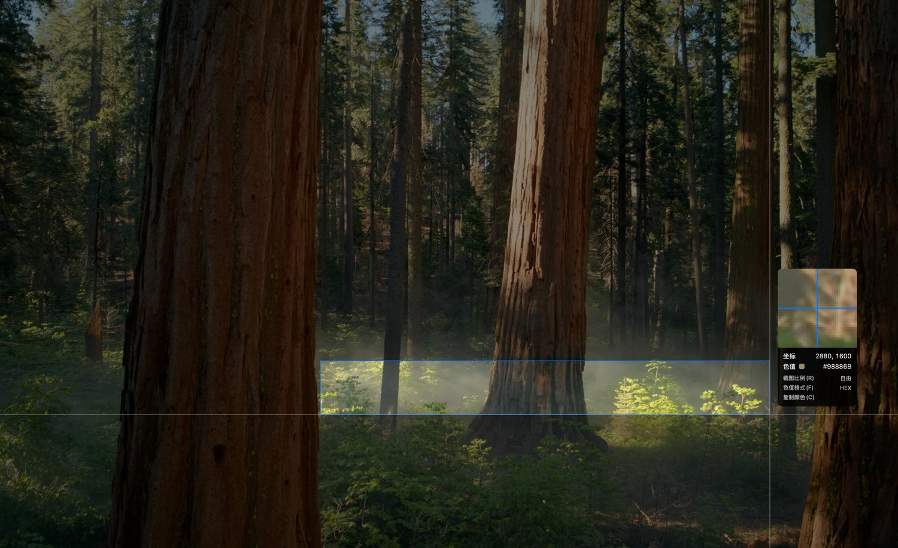
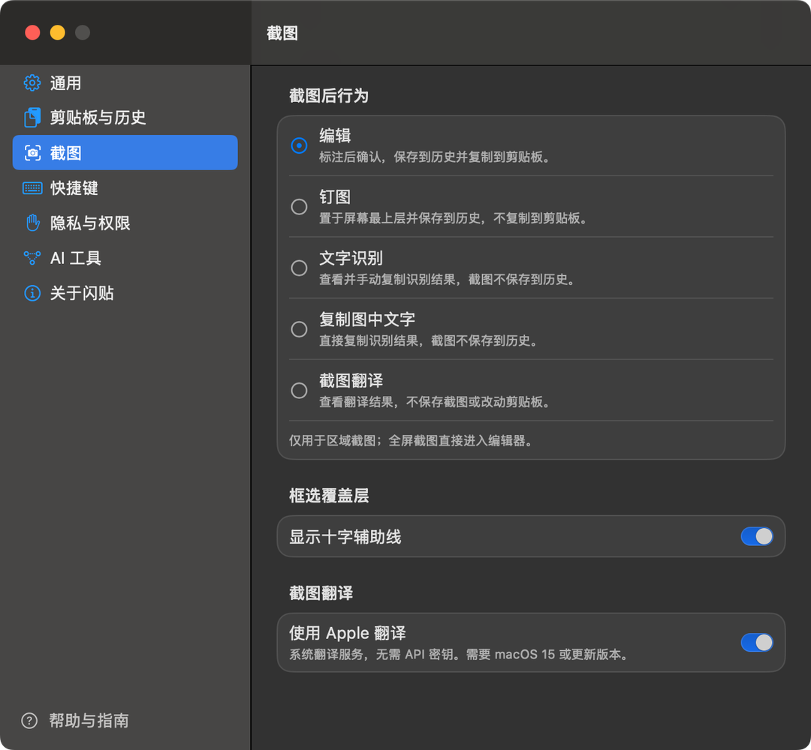

复制过的，按 ⇧⌘V 就回来
文本、图片、文件、链接和颜色自动入库，横向卡片浏览，支持关键字搜索，并按类型、来源应用和日期筛选。
- 保留期限 1 / 3 / 7 / 15 / 30 / 60 天或永久
- 只清理过期且未加入分组的内容
- 收藏分组（Pinboard）与 ⇧⌘C Stack 顺序粘贴
文本
图片
文件
链接
颜色
macOS 14+ · 本地优先 · 无需账号
文本、图片、文件、链接和颜色都收进一个可搜索的卡片面板；⌘⇧A 框选后直接进入标注编辑器，需要对照时还能把截图钉在屏幕上。
一个 DMG 同时支持 Intel 与 Apple 芯片

一次装好，四件事都顺
历史、截图与标注、AI 工具接入、iCloud 同步——都在同一个原生应用里，没有账号，也没有订阅。
文本、图片、文件、链接和颜色自动入库，横向卡片浏览，支持关键字搜索，并按类型、来源应用和日期筛选。
框选时十字辅助线贯穿全屏，放大镜实时读坐标、色值与比例；松手即进入标注编辑器。

矩形、椭圆、箭头、直线、画笔、马克笔、聚光灯、马赛克、橡皮、放大镜、序号、文字、二维码、表情、插入图片、取色

长截图自动拼接 · 钉图浮窗 · 本地 Vision OCR · Apple 翻译（macOS 15+）
blinkclip-mcp 是标准 stdio JSON-RPC 服务，Claude、Codex、Cursor 都能接；「设置 → AI 工具」里直接复制配置。
blinkclip-mcp
开启后经 CloudKit 在 Mac 之间同步历史与分组（生产已上线）；未获授权的构建回退到 iCloud Drive。
快捷键、权限、排除列表、保留期限与 Stack 队列不同步
真实数字
0
无需注册、无需登录，打开就能用；同步也只使用你自己的 Apple ID。
1
同一个 DMG 同时支持 Intel 与 Apple 芯片，不用挑版本。
5
文本、图片、文件、链接、颜色，并保留原始格式（富文本、HTML、文件 URL）。
14+
系统要求 macOS 14 或更新；截图翻译需要 macOS 15+。
手指比鼠标快
默认值如下，全部可以在「设置 → 快捷键」里改。
任何应用里呼出横向卡片面板
多条内容按队列依次粘贴，适合填表
十字辅助线加放大镜读数
截完直接进入标注编辑器
先说清楚要什么权限
闪贴需要系统级能力才能读取界面和投递按键；不授予也能用，只是部分功能会退化为手动操作。

读取其他应用界面（滚动截图、读取内容），并向其他应用发送键盘事件（直接粘贴）。
系统设置 → 隐私与安全性 → 辅助功能；也可从「设置 → 隐私与权限」点「系统设置…」。
截取区域、窗口或整个屏幕。
系统设置 → 隐私与安全性 → 屏幕录制；同样可以从应用内跳转。
直接粘贴时向目标应用投递键盘事件；它与辅助功能同源，系统设置不会单独列出这一项。
随辅助功能一并生效；若提示未就绪，重新勾选辅助功能后重启应用。
不授予也能用：不依赖辅助功能的项目照常工作，滚动截图可改用手动滚动。
本地优先，不是口号
剪贴板历史、截图与设置默认只保存在本机；同步默认关闭，不需要账号，也不经过我们的服务器。
数据位置
~/Library/Application Support/BlinkClip/
目录 0700，数据库 0600；首次启动会把旧的 clipboard.json 迁移进 clipboard.sqlite，原文件保留不覆盖。
内容进入你自己 Apple ID 下的 iCloud（CloudKit 容器或 iCloud Drive/BlinkClip），不经过本项目的服务器；应用也不上报使用数据。
来源应用标记为机密或临时的剪贴板内容会被跳过；也可以在「设置 → 隐私与权限」里指定不记录的应用。

上手前
辅助功能用于读取界面和发送按键（直接粘贴、滚动截图），屏幕录制用于截图；发送事件随辅助功能一并生效。都在「系统设置 → 隐私与安全性」里授权，应用内「设置 → 隐私与权限」有直达按钮。不授予也能用，滚动截图可以改用手动滚动。
默认不会。历史、截图和设置只存在本机；同步默认关闭，开启后内容进入你自己 Apple ID 下的 iCloud，不经过本项目的服务器，应用也不上报使用数据。
支持。同一个 Universal DMG 同时支持 Intel 与 Apple 芯片，系统要求 macOS 14 或更新。
退出闪贴，把 BlinkClip.app 移到废纸篓；本地数据在 ~/Library/Application Support/BlinkClip/，需要彻底清除时一并删除。若开启过 iCloud 同步，云端数据保存在你自己的 iCloud 账户里；若开启过「登录时打开」，先在设置中关闭。
闪贴采用 Developer ID 签名并通过 Apple 公证，未启用 App Sandbox，直接通过 GitHub Releases 分发；安装包双击即可运行，应用内更新由 Sparkle 完成。
「关于闪贴 → 检查更新」会对比最新正式 Release，六小时内复用检查结果；确认后应用内下载完整 Universal DMG 并校验 Ed25519 签名，保存数据后安装重启。更新后系统可能要求重新授予辅助功能权限。
现在就试
下载最新正式版，拖进「应用程序」就能用。免费、开源、无需账号。